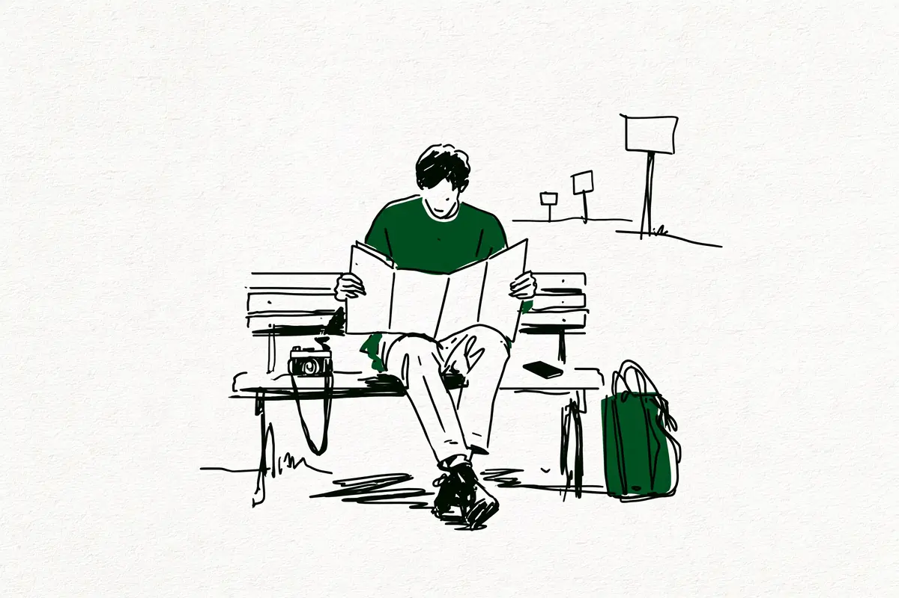

現在地: 買う前に迷ってる
カメラを買うか迷ったら読む順番 ― 買う前に確かめる6つ

一眼やミラーレスが気になっていても、機種名から調べ始めると迷いやすいです。このページでは、買う前に確かめたいことを6つの問いにして、答えの材料になる記事を並べました。一眼レフは鏡を使ってのぞくタイプ、ミラーレスはセンサー(光を受け止める板)が見た映像を画面でのぞくタイプのカメラです(言葉の意味)。
私はカメラを持っていないので、機種のおすすめはしません。リンク先は、実際に買った人・やめた人・続けている人の声と、メーカーの公式ページを読んでまとめた記事です。順番は、考えるだけで済む問いから、お金が動く問いへ、と私が並べました。気になる問いから読んでも大丈夫です。リンク先の記事の一部には広告(アフィリエイトリンク)があり、その記事の冒頭に表示しています。
目次
1. そもそも、カメラはいる? スマホで足りない場面があるか
スマホとの差が出やすいのは、暗い場所・遠くのもの・背景をぼかしたいとき、とメーカーも仕組みを説明しています。その場面で困った覚えがあるかで答えが変わる、というのが私の見立てです。困った覚えがあるなら、次の問いへ進んでください。
2. 続きそう? やめた人と続けている人の理由
やめた人・続けている人の声によく出てきた理由は、お金・重さ・撮るものがなくなる・SNSで比べて疲れる・スマホで十分、でした。続けている人が何をしていたかも、同じ記事に並べています。
3. 重さは大丈夫? 持ち出す自分を想像できるか
重さで使わなくなった人の中には、軽い機種に替えて続いた人も、替えても持ち歩かなかった人もいました。メーカーの仕様表(性能の一覧)には、バッテリーとメモリーカードを含む重さと、本体だけの重さの2つが書かれていることがあります。
4. 何で決める? 決め手と、その後
見た目・安さ・店頭で触った感じ・人のすすめなど、決め手ごとに満足した人と後悔した人の声を並べた記事があります。何を買った人が多かったかの集計も、そこにあります。
5. どの機種? 最初に買った機種を書いた人の声
同じ機種でも、満足した人と、後悔・買い替えをした人がいました。名前がよく出た機種には、もう生産が終わったものも含まれます。機種名より先に確かめられることもあります。
- 初心者が最初に買ったカメラ、口コミで多かった機種と後悔の声: 機種名より先に確かめられること
- EOS R50の後悔・デメリット: 1機種だけを39人分読んだ例
- α6400の後悔・デメリット: 1機種だけを105人分読んだ例
- Z fcの後悔・デメリット: 1機種だけを83人分読んだ例
- E-M10 Mark IVの後悔・デメリット: 1機種だけを48人分読んだ例
- EOS R10の後悔・デメリット: 1機種だけを81人分読んだ例
6. 新品か中古か? 中古で買った人が確かめていたこと
外れたときに戻れるかは、買う場所で違います。店なら初期不良(届いてすぐ見つかる故障)の受付期間や保証、フリマなら受取評価の前に連絡するかどうかです。その条件は、買う前に店や公式のページで確かめられます。
本体と一緒に、何をそろえる?
SDカード(写真を保存する小さなカード)の予備・保護フィルター(レンズの前に付ける透明な板)・防湿庫(湿気を抑えてカビを防ぐ保管庫)・三脚など10品目について、いらなかった声と、その声が見つからなかった品目を分けて並べています。買ったあと、オートから一歩出たくなったら、Pモードの記事もあります。
答えが出たら
6つの問いに答えが出て、撮りたいものがあるなら、それも1つの答えです。どこかの問いで「今は買わない」と決めるのも、同じく1つの答えです。